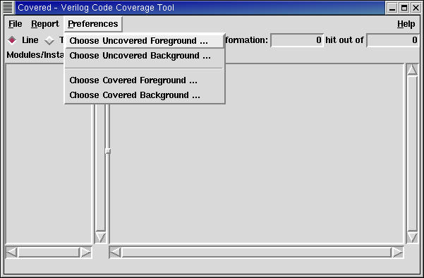
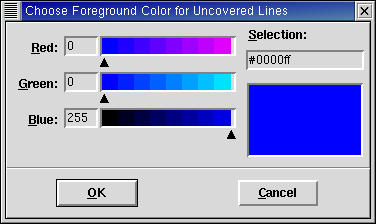

The preferences menu allows the user to adjust the view of some of the GUI elements for the purpose of more easily analyzing coverage information for a specific user. At the current time, user preferences are not saved from one application run to the next. The application uses default values for all user-controllable aspects of the GUI which are "good enough" values for discerning coverage information. It is the goal of the Covered report viewer to make these user preferences saved values from application run to application run. Whenever a preference is confirmed by the user, the resulting output in the GUI is immediately and automatically updated.
Figure 1. The Preferences Menu
Allows the user to specify the foreground color to use for logic that is not fully covered in the logic window. Figure 2. shows what the color selection window looks like.
Allows the user to specify the background color to use for logic that is not fully covered in the logic window. To view highlighted text, this color value should not be set to the same value as the "Uncovered Foreground" color. Figure 2. shows what the color selection window looks like.
Allows the user to specify the foreground color to use for logic that is fully covered in the logic window. Figure 2. shows what the color selection window looks like.
Allows the user to specify the background color to use for logic that is fully covered in the logic window. To view highlighted text, this color value should not be set to the same value as the "Covered Foreground" color. Additionally, to help distinguish covered logic from uncovered logic (when both information is viewed together), it is important that this color be different from the "Uncovered Background" color.
Allows the user to specify the foreground color to use for logic that was found to contain a potential race condition and was, therefore, eliminated from coverage consideration by Covered. Figure 2. shows what the color selection window looks like.
Allows the user to specify the background color to use for logic that was found to contain a potential race condition and was, therefore, eliminated from coverage consideration by Covered. To view highlighted text, this color value should not be set to the same value as the "Race Condition Foreground" color. Additionally, to help distinguish this type of logic from covered and uncovered logic (when either of these pieces of information are viewed together), it is important that this color be different from the other background colors.
Figure 2. The Color Selection Dialog Box
To adjust the color, simply move the arrows beneath the red, green, and/or blue color spectrums until the desired combined color (distinguished in the window in the lower right-hand corner of the window) is displayed. The user may also specify the 8-bit color value for red, green, and/or blue in the entry field to the left of each color spectrum. Finally, the user may specify the 6-digit hexidecimal color value in the entry field on the right-hand side of the window. Whenever the color is modified by using any of these controls, all of the other controls are changed to reflect the current color selected.
When the user has the desired color selected, click the OK button to cause the new color to be propagated to the rest of the GUI. To cancel the preference change (leave color the same value), simply click on the Cancel button in the window.